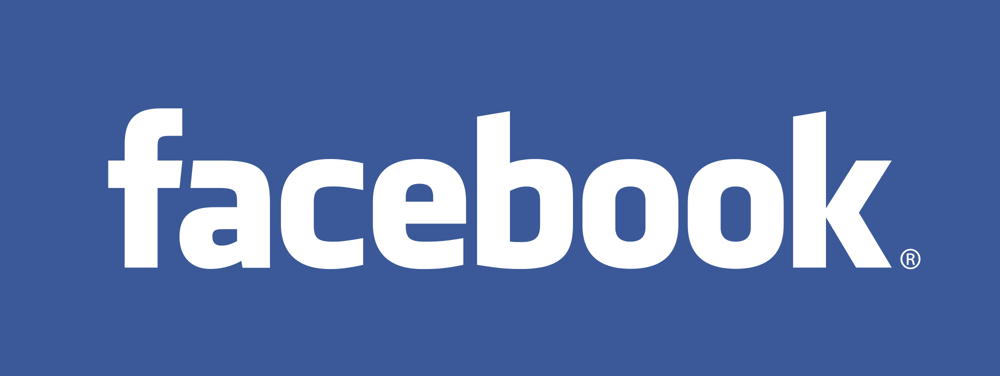
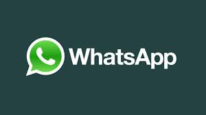

หน่วยที่ 14 โปรแกรมที่นิยมใช้ในสังคมออนไลน์ในประเทศไทย
ความหมายและคุณสมบัติของโปรแกรมที่นิยมใช้ในสังคมออนไลน์ในประเทศไทย
1 LINE คือ เป็น โปรแกรมแชท (Chat) พูดคุยบน โทรศัพท์มือถือสมาร์ทโฟน พัฒนาโดยทีมผู้พัฒนาจากประเทศญี่ปุ่น โดยบริษัท NHN Japan โปรแกรม LINE ถูกพัฒนาขึ้นโดยมีแรงบันดาลใจมาจากหลังเกิดเหตุการณ์แผ่นดินไหวครั้งใหญ่ที่ประเทศญี่ปุ่น เมื่อต้นเดือนมีนาคม ค.ศ. 2011 โดยมีวัตถุประสงค์เพื่อให้คนชาวญี่ปุ่นได้ มีโอกาสติดต่อสื่อสารกันได้ง่าย และสะดวกมากยิ่งขึ้น ในทุกๆ แพลตฟอร์ม ซึ่งคำว่า แพลตฟอร์มหมายถึง ทุกๆ ระบบปฏิบัติการ (OS) ทั้งบนมือถือ และ บนเครื่อง PC คอมพิวเตอร์ตั้งโต๊ะ
2 FACEBOOK คือ บริการบนอินเทอร์เน็ต ที่ช่วยให้เราสามารถติดต่อสื่อสาร ทำกิจกรรมร่วมกับเพื่อนๆ หรือกลุ่มเพื่อน หรือบุคคลอื่นๆ ได้ในเรื่องที่สนใจ โพสต์รูปภาพ โพสต์คลิปวิดีโอ เขียนบทความหรือบล็อก แชทออนไลน์ เล่นเกม ผ่านแอพพลิเคชันเสริม (Applications) ที่มีอยู่มากมาย
3 WHATAPP คือ แอพพลิเคชั่นสำหรับมือถือใช้สำหรับส่งข้อความแบบไม่จำกัด รวมไปถึงส่งรูปภาพ, เสียง และวิดีโอ ข้ามระบบปฏิบัติการ (Platform) ไม่ว่าจะเป็น iPhone, BlackBerry, Android และ Nokia ช่วยให้สามารถแชทกับเพื่อน ๆ ที่ใช้โทรศัพท์มือถือต่างระบบปฏิบัติการ เช่น นาย A ใช้งาน BlackBerry แต่นาย B ใช้งาน Android ทั้งสองคนสามารถแชทกันได้ง่ายโดยไม่ต้องโทรคุยกัน โดยการใช้งาน WhatsApp ซึ่งจะต้องเชื่อมต่อผ่าน GPRS/EDGE, WiFi และ 3G
4 INSTAGRAM คือ แอพพลิเคชั่นหนึ่งที่ผู้ใช้ iPhone หรือ Android นิยมมีไว้เพื่อแบ่งปันรูปภาพ วิดีโอ ในกลุ่มเพื่อน หรือบุคคลอื่นๆ มีการแสดงความคิดเห็น แชทพูดคุยกัน
5 TWITTER คือ บริการเครือข่ายสังคมออนไลน์จำพวกไมโครบล็อก โดยผู้ใช้สามารถส่งข้อความยาวไม่เกิน 140 ตัวอักษร ว่าตนเองกำลังทำอะไรอยู่ โดยเรียกการส่งข้อความนี้ว่า ทวีต ซึ่งแปลว่า เสียงนกร้อง ทวิตเตอร์ก่อตั้งขึ้นเมื่อเดือนมีนาคม พ.ศ. 2549 โดย แจ็ก ดอร์ซี, บิซ สโตน และอีวาน วิลเลียมส์ เจ้าของบริษัทอ็อบวีโออุส ตั้งแต่วันเปิดตัว ทวิตเตอร์เป็นเว็บไซต์ 1 ใน 10 อันดับที่มีผู้เข้าใช้งานมากที่สุด โดยได้รับการขนานนามว่าเป็นเว็บไซต์สำหรับการส่งบริการข้อความสั้น บนอินเทอร์เน็ตซึ่งในภายหลัง นอกจากที่จะสามารถทวีตบนเว็บไซต์แล้ว ได้มีการเปิดให้ใช้งานการส่งทวีต ด้วยการส่งบริการข้อความสั้น (SMS) และบนโปรแกรมประยุกต์ในโทรศัพท์มือถือ และสมาร์ตโฟน
5 SKYP คือ โปรแกรมที่ใช้ติดต่อสื่อสารกันระหว่างผ่านอินเทอร์เน็ตด้วยข้อความพร้อมเสียงและภาพจากกล้อง Webcam โดยจะเป็นการสื่อสารกันแบบ Real Time ลักษณะจะคล้าย Windows Live Messenger หรือที่เราเรียก MSN แต่จะมีข้อดีเหนือกว่ามากในเรื่องของคุณภาพของภาพ และเสียง ซึ่ง Skype จะให้สัญญาณที่คมชัดกว่าอย่างเห็นได้ชัด โดยส่วนใหญ่แล้ว Skype จะนำมาใช้ทำ Video Conference เพื่อสนทนากันแบบตัวต่อตัว หรือประชุมสายพร้อมกันหลายคนผ่านอินเทอร์เน็ตได้ทั่วโลก โดยไม่เสียค่าใช้จ่ายใดๆ เพียงคุณมีสัญญาณอินเทอร์เน็ตอยู่แล้ว การเชื่อมต่อจะเป็นแบบ peer-to-peer voice over Internet protocol (VoIP) จุดเด่นของ Skype คือ การใช้งานเป็นโทรศัพท์ ที่โทรติดต่อผู้อื่นที่ไม่ได้ใช้ Skype ซึ่งโทรไปได้ทั้งเบอร์มือถือ และ เบอร์พื้นฐานทั่วไปได้ทั่วโลก โดยเสียค่าใช้จ่ายเป็นแบบเหมาจ่าย เป็นเดือน
6 HI5 เป็นเว็บไซต์ในลักษณะเครือข่ายสังคมออนไลน์ที่ใหญ่ที่สุดติดอันดับ 1 ใน 10 ของโลก มีจำนวนสมาชิกลงทะเบียนใช้งานอยู่กว่า 65 ล้านรายทั่วโลก สมาชิกส่วนใหญ่ใช้ไฮไฟฟ์ในการติดต่อสื่อสารกับกลุ่มเพื่อน แลกเปลี่ยนประสบการณ์ แชร์รูปภาพกันดู ลามู ยาละมันชัย นักศึกษาปริญญาตรีชาวอเมริกา ได้ร่วมกับเพื่อน ๆ ในมหาวิทยาลัยอิลลินอยส์ เออร์แบนา-แชมเปญจน์ ที่เรียนปริญญาตรีทางด้านวิทยาการคอมพิวเตอร์ ก่อตั้ง SponsorNet New Media ธุรกิจตัวแทนโฆษณาบนอินเทอร์เน็ต ในปี 2004 (ปี 2547) โดยยาละมันชัย ได้เห็นว่าระบบการโฆษณาผ่านแบนเนอร์แบบเก่า ๆ ที่อาจไม่ตรงกลุ่มเป้าหมาย และพฤติกรรมการสร้างอัลบั้มรูปแล้วพูดคุยกัน การเกิดกลุ่มเพื่อนที่คอยอัปเดตข่าวแต่ละคนทางอินเทอร์เน็ต จึงได้เกิดเป็นเว็บไซต์ไฮไฟฟ์
7 MSN หรือ Microsoft Network เป็นบริการทางอินเทอร์เน็ตโดยบริษัทไมโครซอฟท์ เปิดให้บริการเมื่อวันที่ 24 สิงหาคม พ.ศ. 2538 โดยเริ่มจากการให้บริการฮอตเมล และได้ขยายการบริการไปยังอื่น เช่น เอ็มเอสเอ็นเมสเซนเจอร์ ที่ได้รับความนิยมสูง จนล่าสุดได้เปลี่ยนชื่อเป็น วินโดวส์ไลฟ์ เมสเซนเจอร์
8 YouTube เป็นเว็บไซต์ที่ให้ผู้ใช้งานสามารถอัปโหลดและแลกเปลี่ยนคลิปวิดีโอผ่านทางเว็บไซต์ ก่อตั้งเมื่อ 14 กุมภาพันธ์ พ.ศ. 2548 โดย แชด เฮอร์ลีย์ สตีฟ เชง และ ยาวีด คาริม ในปัจจุบัน ยูทูบมีพนักงาน 67 คนและมีสำนักงานอยู่ที่ ซานบรูโนในรัฐแคลิฟอร์เนีย ปัจจุบันเป็นส่วนหนึ่งของกูเกิลการทำงานของเว็บไซต์แสดงผลวิดีโอผ่านทางในลักษณะ อะโดบี แฟลช ซึ่งเนื้อหามีหลากหลายรวมถึง รายการโทรทัศน์มิวสิกวิดีโอ วิดีโอจากทางบ้าน งานโฆษณาทางโทรทัศน์ และบางส่วนจากภาพยนตร์ และผู้ใช้สามารถนำวิดีโอไปใส่ไว้ในบล็อกหรือเว็บไซต์ส่วนตัวได้ ผ่านทางคำสั่งที่กำหนดให้ของยูทูบ ยูทูบถือว่าเป็นหนึ่งในเว็บ 2.0 ชั้นนำของอันดับต้น ๆ ของโลก
9 CAMFROG เป็นซอฟต์แวร์ของบริษัทแคมแชร์ (Camshare) สามารถให้ผู้ใช้สามารถแลกเปลี่ยนภาพจากเว็บแคมและเสียงผ่านทางอินเทอร์เน็ต โดยโปรแกรมนี้สามารถใช้ให้มีการประชุมออนไลน์ได้หลายคนพร้อมกัน แคมฟรอกแตกต่างจากโปรแกรมทั่วไปโดยผู้ใช้สามารถใช้โปรแกรมบนเซิร์ฟเวอร์ของตัวเองได้ ในปัจจุบัน แคมฟรอกมีการพูดคุย แลกเปลี่ยนความคิด และการแสดงวิดีโอ หลายอย่างรวมถึงเรื่อง การท่องเที่ยวกีฬา ภาษา วัฒนธรรม เล่นเกมตอบปัญหาออนไลน์
10 WEBCAM หรือ ชื่อเรียกเต็มๆว่า Web Camera แต่ในบางครั้งก็มีคนเรียกว่า Video Camera หรือ Video Conference ก็แล้วแค่ความเข้าใจแต่ละคน เว็บแคมเป็นอุปกรณ์อินพุตที่ สามารถจับภาพเคลื่อนไหวของเราไปปรากฏในหน้าจอมอนิเตอร์ และสามารถส่งภาพเคลื่อนไหวนี้ผ่านระบบเครือข่ายเพื่อให้คนอีกฟากหนึ่งสามารถเห็นตัวเราเคลื่อนไหว ได้เหมือนอยู่ต่อหน้า ถือว่าเป็นอุปกรณ์ที่มีประโยชน์อีกตัวหนึ่ง และเริ่มมีความจำเป็นมากขึ้นเรื่อยๆ
11 PANTIP.COM หรือนิยมเรียกย่อว่า พันทิป ก่อตั้ง 7 ตุลาคม พ.ศ. 2539 เป็นเว็บไซต์ไทยที่ให้บริการเว็บบอร์ด ที่มีชื่อเสียงและเป็นที่ยังคงได้รับความนิยมอยู่ มีห้องสนทนาครอบคลุมมากมายปัจจุบัน เป็นเว็บไซต์ที่มีผู้เข้าชมจากประเทศไทยมากเป็นอันดับที่ 8 (19 กันยายน 2557) จากการจัดอันดับโดยอะเล็กซา และได้รับการจัดอันดับยอดนิยมของประเทศไทย โดย ทรูฮิต โดยส่วนเกี่ยวกับคอมพิวเตอร์อยู่อันดับ 1 ใน 50 และนอกจากนี้มีให้บริการบล็อก ในเว็บไซต์บล็อกแก๊งก์ ซึ่งเชื่อมโยงกับเว็บพันทิปโดยตรงพันทิป.คอม ก่อตั้งโดยนายวันฉัตร ผดุงรัตน์ โดยแรกเริ่มเพื่อจุดประสงค์ในการทำหนังสือแม็กกาซีน คอมพิวเตอร์ออนไลน์โดยนำชื่อมาจากห้างพันธุ์ทิพย์พลาซ่าซึ่งเป็นแหล่งรวมการค้าคอมพิวเตอร์ใหญ่ที่สุดในประเทศไทย เพื่อให้ผู้ชมเข้าใจผิดว่าเป็นเว็บไซต์ของทางห้าง แต่ผลตอบรับจากผู้เยี่ยมชมกลับชื่นชอบที่จะใช้กระดานข่าวสาธารณะในการออกความคิดเห็นในด้านต่างๆ มากกว่า แม็กกาซีน จึงทำให้พันทิป.คอมเปลี่ยนเป้าหมายทางธุรกิจเป็นการดำเนินงานทางด้านกระดานข่าว
12 GOOGLE.COM ซึ่ง google.com กับ google.co.th แตกต่างกันตรงที่อันแรก เป็นชื่อเดิมที่เราหลายคนคุ้นเคย แต่อันหลังเป็นของกูเกิลที่เป็นภาษาไทย
13 WIKIPEDIA.ORG เว็บไซต์รวบรวมความรูั ที่คนไทยนิยมใช้มากที่หนึ่ง เว็บไซต์นี้ก็ถือเป็นแหล่งอ้างอิงขนาดใหญ่
14 KAPOOK.COM เว็บนี้มีทุกอย่างให้ดู ทั้งเพลง เกม หนัง วีดีโอคลิป ดูดวง ผลบอล เรียกว่าบันเทิงสุดๆ เข้าเว็บนี้แล้วจะอัพเดททุกอย่างที่ทันสมัย
15 SANOOK.COM เว็บท่าอันดับหนึ่งของเมืองไทย ที่รวบรวมหลากหลายเรื่องราวเอาไว้ที่เดียว
โปรแกรมประยุกต์ (application) เครือข่ายสังคมออนไลน์ในประเทศไทยที่นิยมใช้สูงสุด 5 อันดับ
1. 
2. 
3. 
4.
5.